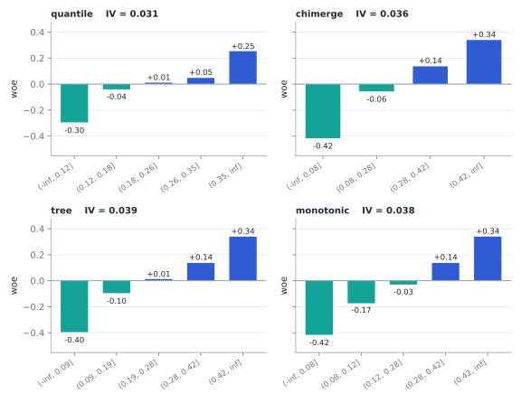
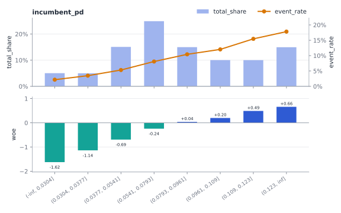

3. Binning and WOE#
A scorecard groups every characteristic, so that the effect of each group can be read, explained to the business and monitored. This chapter compares the binning methods on one variable, chooses the binning of every variable, and fits them all at once into a binning specification that later chapters reuse. The characteristics are the seven candidates of Data and samples; the transaction features of Transaction features wait for the next version of the scorecard.
Code from the previous chapters
>>> import numpy as np
>>> import pandas as pd
>>> from kivi.datasets import make_applications
>>> applications = make_applications(n_applicants=40000, rng=0)
>>> months = pd.period_range("2024-01", periods=12, freq="M")
>>> applications["month"] = months[np.arange(40000) * 12 // 40000]
>>> eligible = applications[~applications["policy_decline"]]
>>> accepts = eligible[eligible["approved"]]
>>> development = accepts[accepts["month"] <= "2024-09"]
>>> validation = accepts[accepts["month"] >= "2024-10"]
>>> rejects = eligible[~eligible["approved"] & (eligible["month"] <= "2024-09")]
>>> features = ["age", "income", "debt_to_income", "inquiries", "housing", "employment", "incumbent_pd"]
Compare the binning methods#
The debt-to-income ratio is a typical continuous characteristic. bin_edges() fits quantile edges from the values alone, while chimerge_edges(), tree_edges() and monotonic_edges() also use the target; Binning describes each one. With at most five bins each, woe_table() measures the result:
>>> from kivi.binning import bin_edges, chimerge_edges, monotonic_edges, tree_edges
>>> from kivi.woe import woe_table
>>> x, y = development["debt_to_income"], development["target"]
>>> candidates = {
... "quantile": bin_edges(x, bins=5),
... "chimerge": chimerge_edges(x, y, max_bins=5),
... "tree": tree_edges(x, y, max_bins=5),
... "monotonic": monotonic_edges(x, y, max_bins=5),
... }
>>> tables = {name: woe_table(pd.cut(x, edges), y) for name, edges in candidates.items()}
>>> pd.DataFrame(
... {
... "bins": {name: len(table) for name, table in tables.items()},
... "iv": {name: table["iv"].sum() for name, table in tables.items()},
... "rising": {name: table["woe"].is_monotonic_increasing for name, table in tables.items()},
... }
... ).round(3)
bins iv rising
quantile 5 0.031 True
chimerge 4 0.036 True
tree 5 0.039 True
monotonic 5 0.038 True

WOE of the debt-to-income bins for each method. The supervised methods place their edges where the event rate changes, and all four give a WOE that rises with the ratio.#
The supervised methods find a little more information than the quantiles, and all four give a WOE that rises with the ratio, as a higher burden of debt should. Only monotonic_edges() guarantees that trend, so the project uses it for the four continuous characteristics: age, income, debt_to_income and incumbent_pd. A trend that the business expects is easier to defend than a slightly higher IV.
Give inquiries explicit edges#
The profile marked inquiries as tied: almost half of the applicants had no inquiry, so its quantile bins collapse. Its few values get explicit edges instead, with three or more inquiries in one bin:
>>> inquiry_edges = [-np.inf, 0, 1, 2, np.inf]
>>> woe_table(pd.cut(development["inquiries"], inquiry_edges), y)[["total", "event_rate", "woe"]].round(3)
total event_rate woe
bin
(-inf, 0.0] 9524 0.085 -0.188
(0.0, 1.0] 7136 0.107 0.066
(1.0, 2.0] 2738 0.123 0.222
(2.0, inf] 829 0.157 0.507
The event rate rises with every further inquiry, from 8.5% without any to 15.7% with three or more.
Group the employment categories#
Categorical characteristics keep their labels as groups, unless some labels are too small or too alike to keep apart:
>>> woe_table(development["employment"], y)[["total", "event_rate", "woe"]].round(3)
total event_rate woe
bin
permanent 14552 0.094 -0.081
temporary 3031 0.126 0.255
self_employed 2644 0.110 0.103
Temporary and self-employed applicants default at similar rates, both above the permanent employees. chimerge_groups() merges adjacent categories whose event rates do not differ significantly, and returns the grouping as a dict; group_categories() applies it to any sample:
>>> from kivi.binning import chimerge_groups, group_categories
>>> employment_groups = chimerge_groups(development["employment"], y)
>>> employment_groups
{'permanent': 'permanent', 'self_employed': 'self_employed, temporary', 'temporary': 'self_employed, temporary'}
>>> group_categories(validation["employment"], employment_groups).value_counts()
employment
permanent 4839
self_employed, temporary 1946
Name: count, dtype: int64
housing keeps its three labels, whose event rates differ clearly.
Fit every variable at once#
fit_spec() fits the binning of every column with the methods chosen above and measures the WOE of every group; see Binning specifications. The vendor’s PD gets up to eight bins, because it carries most of the information:
>>> from kivi.spec import fit_spec
>>> method = {column: "monotonic" for column in ["age", "income", "debt_to_income", "incumbent_pd"]}
>>> method["employment"] = "chimerge"
>>> spec = fit_spec(
... development[features], y, method=method, bins={"inquiries": inquiry_edges, "incumbent_pd": 8}
... )
>>> pd.Series({column: table["iv"].sum() for column, table in spec.tables.items()}).round(3)
age 0.028
income 0.027
debt_to_income 0.038
inquiries 0.037
housing 0.110
employment 0.015
incumbent_pd 0.299
dtype: float64
The specification holds the edges, the category groups and the WOE table of each column. The table of the vendor’s PD shows the WOE rising over its eight bins:
>>> spec.tables["incumbent_pd"][["total", "event_rate", "woe", "iv"]].round(3)
total event_rate woe iv
bin
(-inf, 0.0304] 1017 0.022 -1.623 0.071
(0.0304, 0.0377] 1008 0.035 -1.136 0.041
(0.0377, 0.0541] 3051 0.053 -0.692 0.055
(0.0541, 0.0793] 5038 0.081 -0.243 0.013
(0.0793, 0.0961] 3033 0.104 0.037 0.000
(0.0961, 0.109] 2029 0.120 0.199 0.004
(0.109, 0.123] 2025 0.155 0.490 0.029
(0.123, inf] 3026 0.178 0.660 0.084

The eight bins of the vendor’s PD on the development sample. The default rate rises from 2% in the lowest bin to 18% in the highest, which holds the applicants just below the vendor’s 15% cut-off.#
The binning is fitted on the development sample only. Every later sample, from the validation sample to the applications in production, is grouped with the same edges and groups, so that its WOE and its stability are comparable.